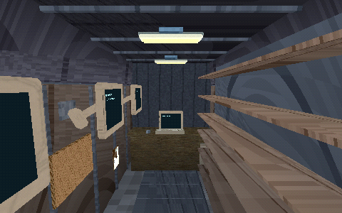
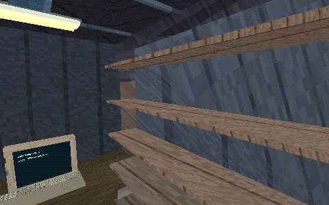
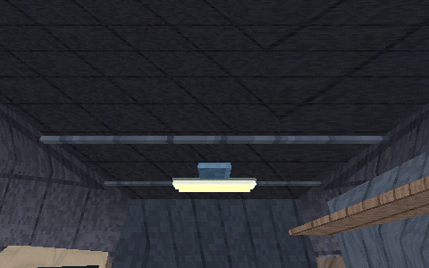
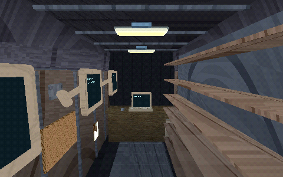
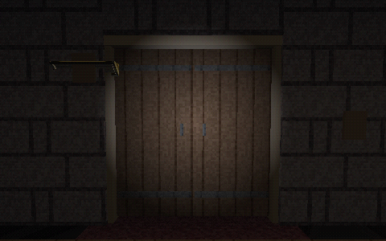
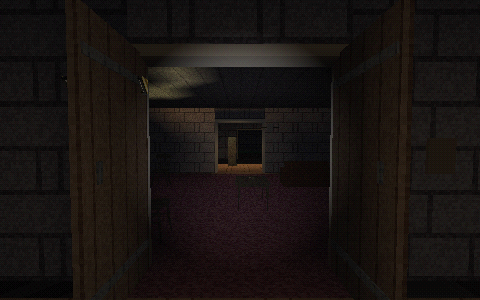

Actual GPU frames. Van flashlight and site breaker off: three vehicle-supply ceiling fittings illuminate racks and workstation. House and elevated Hollow Creek shown. Castle wooden doors retain their hinges and actual floor elevation, with shared collision/shadows. Test door temporarily installed in an existing socket and scene restored without saving overrides. Human review and van metal texture refinement remain open.






